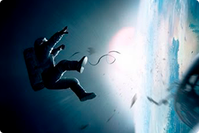

Любимые фильмы

Побег из Шоушенка
Успешный банкир Энди Дюфрейн обвинен в убийстве собственной жены и ее любовника. Оказавшись в тюрьме под
названием Шоушенк, он сталкивается с жестокостью и беззаконием, царящими по обе стороны решетки. Каждый,
кто попадает в эти стены, становится их рабом до конца жизни. Но Энди, вооруженный живым умом и доброй
душой, отказывается мириться с приговором судьбы и начинает разрабатывать невероятно дерзкий план своего
освобождения.
Наркоз
Клай Бересфорд вынужден лечь под нож. Однако в процессе операции на сердце он неожиданно приходит в себя.
Находясь в парализованном состоянии, будучи не в силах пошевелить ни рукой, ни ногой, он, тем не менее,
чувствует каждое касание скальпеля к своей плоти…

Астрал
Джош и Рене переезжают со своими детьми в новый дом, но не успевают толком распаковать вещи, как
начинаются странные события. Необъяснимо перемещаются предметы, в детской звучат странные звуки… Но в
настоящий ужас приходят родители, когда их десятилетний сын Далтон впадает в кому. Все усилия врачей в
больнице помочь мальчику безуспешны.

Гравитация
Доктор Райан Стоун, блестящий специалист в области медицинского инжиниринга, отправляется в свою первую
космическую миссию под командованием ветерана астронавтики Мэтта Ковальски, для которого этот полет —
последний перед отставкой. Но во время, казалось бы, рутинной работы за бортом случается катастрофа.
Шаттл уничтожен, а Стоун и Ковальски остаются совершенно одни; они находятся в связке друг с другом, и
все, что они могут, — это двигаться по орбите в абсолютно черном пространстве без всякой связи с Землей и
какой-либо надежды на спасение.
Все фильмы